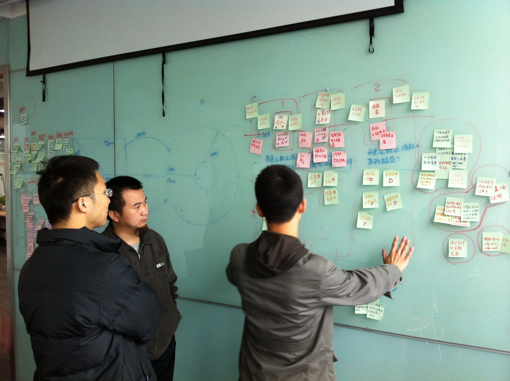
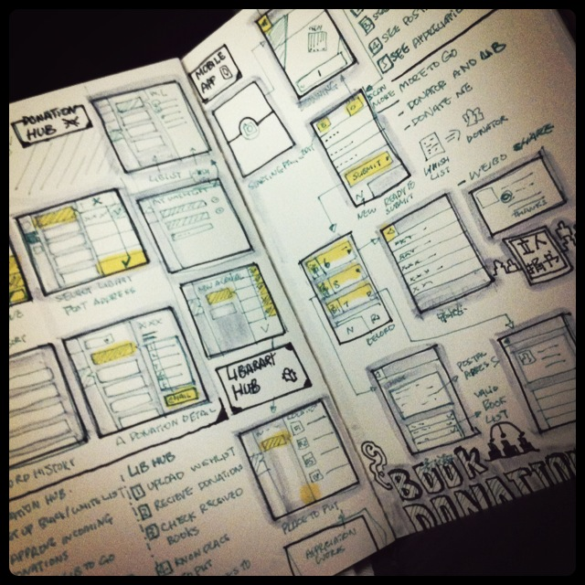
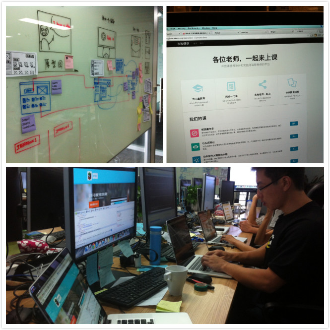

2012年开始，我参与了多个国内社会影响力项目（Social Impact Project）的规划和设计阶段，在四川，我接触了多个跟教育相关的公益组织，和在纽约、墨尔本、伦敦这样的世界一线城市、或是加纳、乌干达这些非洲大陆属地的ThoughtWorks人一样，我们都在致力于把创新和技术实践融入社会责任实践中去。
越来越多的公益组织希望利用创新将自己公益的理念传播，用技术解决组织运营中的各种问题，作为产品设计师，以下是我希望分享的六点建议：
做公益就是在做产品
产品的核心逻辑是：资源—内容—价值—客户—付费，即用内容包装资源、产生客户愿意付费的价值、最终完成付费。而公益的本质也有类似，只是付费的对象是整个社会、弱势人群，或者付费的货币是传播力。具体来说，公益就是在做以下几件事情：
- 把自己的资源包装一种内容：例如环保组织的资源是一群致力于水污染的学者，他们产出的生活用水知识总结就是一种内容；
- 让内容产生价值：价值的唯一定义是有人消费，例如环保组织的学者因为经常在微博上发一些关于水健康的小知识聚集了1000个微博粉丝，这时内容就是有价值的；
- 让价值持续传递给客户：价值本身是短暂的，只有价值为客户的持续交付才可能让价值持续，例如环保组织的微博不但积攒了更多的粉丝（价值升值），还通过线下活动获得了更多关注（价值衍生）；
- 让客户付费：在公益组织中客户的付费就是指捐赠钱物或是影响力（例如转发微博，联系企业），让公益组织生存的说到底是钱和影响力。
当这四件事都被很好地完成了，公益组织才可能持续成长壮大，“产品”才可能常青。根据这个逻辑，我慢慢发现，很多公益组织在某个项目的开展前，并没有很好的思考这个问题，在鸿图大展的浪漫主义情怀之后，剩下的只是道德无力的挫败。
那么，逻辑顺序正好倒置，才开始任何一个项目之前请问自己：
- 为了使我们的组织继续成长，这个项目如何获利？我们希望的是捐助？还是社会影响力？
- 为了使这个项目获利，作为交换，我们为谁服务？ 在满足他们之后，他们真的会交换给我们想要的吗？
- 为了使他们会交换给我们想要的，我们给他们提供什么价值？为什么说他们认为这是价值？解决了什么问题？
- 为了实现这种价值，我们提供什么东西给他们？解决方案是什么？能解决吗？
- 为了交付解决方案，我们凭什么说我们能给？我们有什么资源支持我们做到这一点？
很多时候，我们看到情况是，还没想清楚项目对组织来说意味着什么，就开始为臆想的客户解决臆想的问题，并设计一个我们没办法运营的解决方案。

我们在帮助立人乡村图书馆的朋友回答这些问题
这样的事情在产品的世界里经常发生，而在公益组织的世界里也不少见，只是慈善让人不忍评判，失败顿时有了道德的借口。
让专业的人做专业的事
绝大部分的公益组织者来自于草根，他们在中国社会根基最薄弱的地方，受人尊敬地发挥着自己的价值。但是不得不回避的事实是，在专业上，大部分的公益组织参与者缺培养，在产品规划设计、项目组织运营、市场研究推广等方面都缺乏足够的专业技能。
就产品规划设计一点来谈，大量与我们讨论的公益组织，哪怕再小都有一个平台化的梦想，他们希望自己管理的参与者能够自组织地在平台上活动，建立一个自给自足地生态环境。
任何一个有经验的互联网人都会认识到的一点是，任何不在解决现有实际问题的平台化建设基本没有成功案例，这一点的认识需要专业工作的培养。
人人都是互联网产品经理的谬论让所有人都雄心勃勃，无论在产品的设计期或者演进期，他们都愿意左右产品的设计方向和细节。但事实上，互联网公司的初级产品经理都需要至少两到三年时间历练成长，经受失败的打击，而作为从未有经验的公益组织成员，如何能够在一开始理解产品设计。
而更不可忽视的区别是，IT能力越高失败成本越低，拥有一流IT能力互联网公司产品经理成长的成本远远低于公益组织者。
因此，作为设计师，我们更愿意听到来自公益组织对真实问题更生动的描述，设计的工作交给设计师去完成，在参与立人图书馆项目的设计过程中，我们听到了这样的故事：
"我们的图书馆经常收到不需要的书，管理起来很麻烦，又担心辜负了人家的好意，每个图书馆要的书也不太一样，为了解决这个问题，我们有些特别忠实的会员会用excel把这次要捐赠的书记录下来，通过邮件发送给我们，我们标注出来哪些书是需要的，再回复给他"
这样的故事告诉我们问题为什么发生、产生了什么结果、大家是怎么解决的，这样的故事是我们欢迎的，而简单说“我们的问题是没有一个图书管理平台”则不是一个好的故事，它把解决方案当成了问题本身。
立人捐书APP最早的草图设计，产品设计需要专业的设计师进行。

做力所能及的事
就像创业着总是怀揣着一颗改变世界的梦一样，在谈论理想的时候，天生感性的公益组织者也养成了“前缀病”。
所谓“前缀病”是给自己构想添加各种看起来令人兴奋的各种“前缀”，它们包括“智能化”、“定制化”、“社会化”、“web2.0”、“平台化”种种，这些在互联网世界里最令人感到无聊的文字游戏也真真正正在公益组织者身上发生。
这就是“我们要做什么”到“我们能做什么”的思维转变。前者关注结果——如果成功，它将变成什么样；后者关注原因——因为我们有这些，我们的客户要这些，所有我们要做那些。
事实就是这么残酷，白手起家的蒙汗药让你只看见成功的结果而看不到由何而起，你自以为是地认为成功都是他们当初义无反顾地要，于是你也义无反顾地要。殊不知，成功都是因为你有什么，它根本不在乎你要什么。
在我看来，深耕现有的参与者是最好的选择，在参与开放课堂项目的过程中，我们最开始的想法是针对中小学社会实践课的教学。但是慢慢发现，我们能够获得的教师以及内容资源只集中在小学5，6年级的科学课。

开放课堂的设计过程本身就是不断做减法的过程，这需要深刻了解公益组织的资源限制做出决定
于是，与其构建一个巨大的平台，不如针对核心的30位老师服务，最后这个数字降低到不超过10位，看似我们放弃了很多可能的机会，但作为一个没有一名全职参与的项目来说，这是我们力所能及的事。
包装已有价值
越关注“我们要做什么”就越会忽略“我们有什么”，事实上很多公益组织经过几年的发展已经拥有了一些独特的价值，而很多情况下，他们都在急于创造新的价值而不去包装已经存在的现有价值。
究其原因，它们并不认为那些是价值。确实，几年运作的沉淀结果总是些零零碎碎的细枝末节，缺乏组织，毫无章法，但是，事实上，可以被重新包装的价值大致包括两个方面：
被总结的内容：这是公益组织最常见的价值沉淀，开放课堂背后的教育大发现组织，经过若干年的发展，总结了大量学生社会实践课的作业，这些内容对于社会实践课老师的授课有潜在的价值，甚至可以吸引对教育感兴趣的家长； 被发现的问题：很多人并没有意识到这也可以成为价值，在公益组织的运作中有很多重复性的事务，事务过程中一定总结了很多问题，这些问题可能成为共通性的问题，这些问题的解决不但提升组织效率，也可提升参与者的体验。 而真实的情况是，这些价值要么被蒙藏灰迹之中，要么被习惯的忍受打败，更多人愿意为外面的新奇玩意兴奋激动而不回头思考自己手中的金子。
因此，从这两个角度出发，思考自己的组织中到底总结出什么，哪些内容可以提炼，就像立人图书馆总结各地县镇图书馆孩子的阅读习惯，制作调查报告，提升自身的专业影响力；同时思考组织运作中可以被改进的问题，提升参与者体验，又如立人图书馆发布捐书APP应用解决不需要捐书过多的问题。
所谓创新，就是用创造力包装旧内容产生新价值；所谓创新，就是用创造力解决旧问题产生新价值。
共赢和交换资源
资源是有限的，特别对于公益组织而言，也许是因为大部分公益组织者较为感性，这件事本身的道德属性，我们还看不到资源的共赢。
在我看来，最好的关系是合作，最好的合作是共赢。公益组织要学会利用外部的资源，这些资源包括公益组织之间，也包含外部的专业能力。
很多公益组织者的前提假设中，公益是一件不求回报的事情，既然参与就不应该求索取。在和开放课堂的合作过程中，我始终强调的是，只有价值的互换才能使得合作稳定和长久，共赢才是合作的本质。
这里的需其实很简单，就是社会影响力，作为合作伙伴，可以帮助我们提升在这个领域的口碑，多帮着联系朋友，组织活动。我们用技术和设计资源提升在公益组织的社会影响力，这样的合作才能持久，才能共赢。
另一方面，我看见公益组织之前其实有很多可以桥接互助共赢的资源，例如我们正在帮助一个从事Scratch儿童编程教育的组织，把他们的资源放在开放课堂上。但是没有我们之前，很多这样的事情大家都是在闭门造车，并不知道对方在做相同的事情。
就像互联网创业者已经形成了很好的社区气氛，有很多线上或线下的媒体进行宣传和支持，创业者之间也形成了良好的互动习惯。公益组织届还需要更多的标志性人物，建立这样资源互助和共享的平台。
保持学习
不可否认的是，保持学习习惯，保持成长的人并不多。而一个公益组织的成长不在于推出了多少惊人的项目，拉到了多少捐赠，而在于公益组织的核心成员成长了多少。
对我来说，我做公益并不是希望我们帮助规划和设计的产品帮助到了多少人，我更加愿意看到的是公益人的成长——他们更加专业、更加有求知欲——只有公益人的成长才能带来公益事业的真正成熟。
开放课堂的协调人四川师范大学的吴长城老师从去年7月开始和我们一起工作，为了了解我们的敏捷开发过程，他甚至读完了《硝烟中的Scrum/XP》，这对于一个读文科的师范类学校老师而言，已是不易。但正是他的求知欲和学习热情，一直激励着我们朝着既定的目标努力。
写在最后
从2012年7月开始，我在成都接触公益组织，借助ThoughtWorks技术和设计能力帮助教育界的公益组织，目前我们支持的教育组织有四个，它们是：
- 立人乡村图书馆：致力于中国县镇级少儿图书馆推广；
- 教育大发现：关注开放教育，推广创新教育实践的公益组织；
- 阳光书屋：致力于乡村信息化教育，以平板电脑为载体让每个农村孩子接触优质教育工具；
- LEAD北京阳光志愿者俱乐部：关注打工者子弟教育的公益组织。
通过创新和技术，我们为立人乡村图书馆，设计交付了帮助解决捐赠不需要图书和定点捐赠问题的捐书APP；为教育大发现设计交付开放课堂，帮助小学社会实践课老师分享课程教案的网站；为阳光书屋交付平板电脑端的互动式教案（媒体报道）；为LEAD阳光组织交付活动召集系统。
这些小的创新产品也吸引了很多ThoughtWorks之外的设计团队（如彩程设计）、产品经理（如超有爱百词斩）、开发团队（如Ruby社区的朋友）加入，我希望更多的专业能力投入到公益的世界里来，他们的公益事业太需要设计和技术的能力支持。
希望这些能给80万公益人一些帮助。虽然好像也不能改变多少，但只要是能让这个一般般的世界变得稍微好一点，还是得做。